library(tidyverse)
library(purrr)
library(gsheet)
library(raster)
library(ncdf4)
library(lubridate)
library(readxl)
library(writexl)
library(caret)
library(tidyr)
library(r4pde)
library(refund)
library(readr)
library(fdatest)
library(dplyr)
library(rlang)
library(rms)
library(pROC)
library(PresenceAbsence)
library(OptimalCutpoints)
library(ggtext)
library(scales)
library(PRROC)
library(patchwork)Libraries
Load Required Libraries
Data
# Read datasets
data <- read_xlsx("plan/weather_data_final.xlsx")
data_nasa <- read_csv("plan/weather_data_nasa.csv")
# Remove studies 126 to 150
data <- data %>% filter(!study %in% 126:150)
data_nasa <- data_nasa %>% filter(!study %in% 126:150)
# Read predictor
df_predictors <- read_xlsx("plan/df_predictors.xlsx")Logistic Models
# Set up datadist for rms
dd <- datadist(df_predictors)
options(datadist = "dd")
# Convert epidemic to numeric
obs <- as.numeric(as.character(df_predictors$epidemic))
n <- nrow(df_predictors)Fit logistic regression models using predictors of interest. Restricted cubic splines are applied where appropriate to allow for non-linear effects.
Logistic model 1 (LM1)
# Fit logistic model with restricted cubic splines
m_logistic <- lrm(factor(epidemic) ~ tmin + rcs(rh, 4),
data = df_predictors, x = TRUE, y = TRUE)Logistic model 2 (LM2)
# Fit logistic model with restricted cubic splines
m_logistic2 <- lrm(factor(epidemic) ~ rcs(rh, 4) + rcs(dew, 3),
data = df_predictors, x = TRUE, y = TRUE)Logistic model 3 (LM3)
# Fit logistic model with restricted cubic splines
m_logistic3 <- lrm(factor(epidemic) ~ tmin + prec2,
data = df_predictors, x = TRUE, y = TRUE)LM performance
Evaluate models fit using Cox-Snell and Nagelkerke R², Brier Score, ROC-AUC, optimal classification threshold, accuracy, and confusion matrix.
evaluate_logistic <- function(model, data, resp_col, B_boot = 1000) {
n <- nrow(data)
actual <- data[[resp_col]]
predicted_prob <- predict(model, type = "fitted")
# Log-likelihoods
ll_null <- logLik(glm(as.formula(paste(resp_col, "~ 1")), data = data, family = binomial()))
ll_full <- logLik(model)
# R²
cs_r2 <- 1 - exp((2 / n) * (ll_null - ll_full))
nag_r2 <- cs_r2 / (1 - exp((2 / n) * as.numeric(ll_null)))
# Brier
brier <- mean((predicted_prob - actual)^2)
# ROC-AUC
roc_obj <- pROC::roc(actual, predicted_prob)
auc_val <- pROC::auc(roc_obj)
# Optimal threshold
preds <- data.frame(1, actual, predicted_prob)
opt_thresh <- optimal.thresholds(preds)$predicted_prob[3]
predicted_class <- ifelse(predicted_prob > opt_thresh, 1, 0)
accuracy <- mean(predicted_class == actual)
# Confusion matrix
conf <- caret::confusionMatrix(
factor(predicted_class),
factor(actual),
mode = "everything",
positive = "1"
)
# PR-AUC via bootstrap
pr_auc_fun <- function(y, p) {
y <- as.integer(y)
if (length(unique(y)) < 2) return(NA_real_)
PRROC::pr.curve(scores.class0 = p[y == 1],
scores.class1 = p[y == 0],
curve = FALSE)$auc.integral
}
pr_apparent <- pr_auc_fun(actual, predicted_prob)
opt_vec <- numeric(B_boot)
for (b in 1:B_boot) {
idx_boot <- sample.int(n, replace = TRUE)
dat_boot <- data[idx_boot, , drop = FALSE]
fit_b <- update(model, data = dat_boot)
y_boot <- dat_boot[[resp_col]]
p_boot <- predict(fit_b, type = "fitted")
p_test_orig <- predict(fit_b, newdata = data, type = "fitted")
opt_vec[b] <- pr_auc_fun(y_boot, p_boot) - pr_auc_fun(actual, p_test_orig)
}
pr_corrected <- pr_apparent - mean(na.omit(opt_vec))
list(
cs_r2 = cs_r2,
nag_r2 = nag_r2,
brier = brier,
auc_roc = auc_val,
accuracy = accuracy,
conf_matrix = conf,
pr_auc = pr_corrected,
opt_threshold = opt_thresh
)
}LM1
res_LM1 <- evaluate_logistic(m_logistic, df_predictors, "epidemic")LM2
res_LM2 <- evaluate_logistic(m_logistic2, df_predictors, "epidemic")LM3
res_LM3 <- evaluate_logistic(m_logistic3, df_predictors, "epidemic")Models validation
Perform internal validation using bootstrap and cross-validation. PR-AUC is calculated with bootstrap optimism correction to estimate the expected performance on new data.
LM1
predicted_prob <- predict(m_logistic, type = "fitted")
actual <- df_predictors$epidemic
# Calibration: bootstrap and cross-validation
cal_boot <- calibrate(m_logistic, method = "boot", B = 1000)
plot(cal_boot, main = "Calibration Plot (Bootstrap)", col = "red")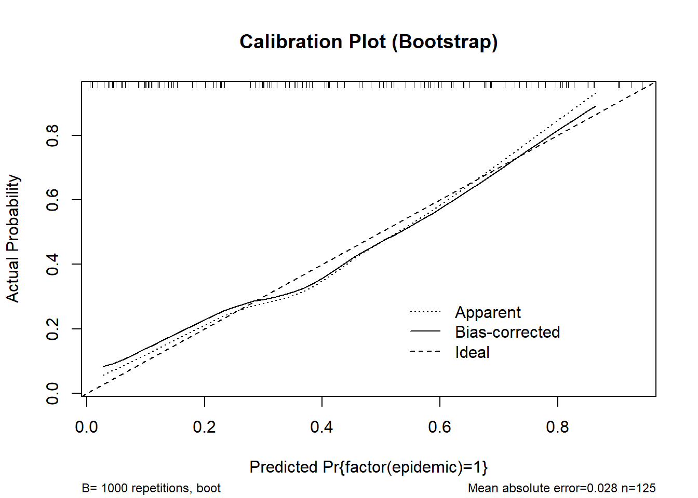
n=125 Mean absolute error=0.028 Mean squared error=0.00096
0.9 Quantile of absolute error=0.043cal_cv <- calibrate(m_logistic, method = "crossvalidation", B = 10)
plot(cal_cv, main = "Calibration Plot (Cross-validation)")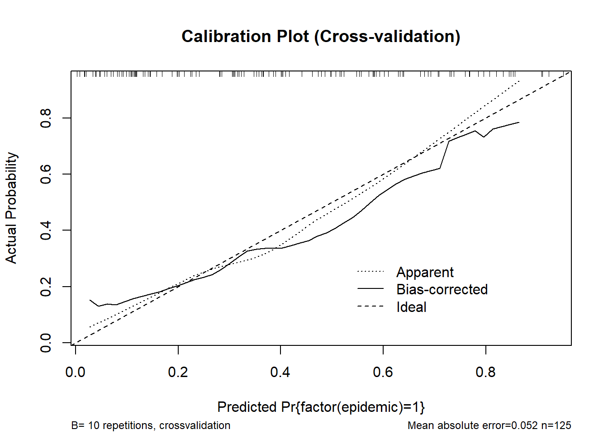
n=125 Mean absolute error=0.052 Mean squared error=0.0036
0.9 Quantile of absolute error=0.092# rms-style calibration plot
val.prob(predicted_prob, actual, pl = TRUE, smooth = TRUE)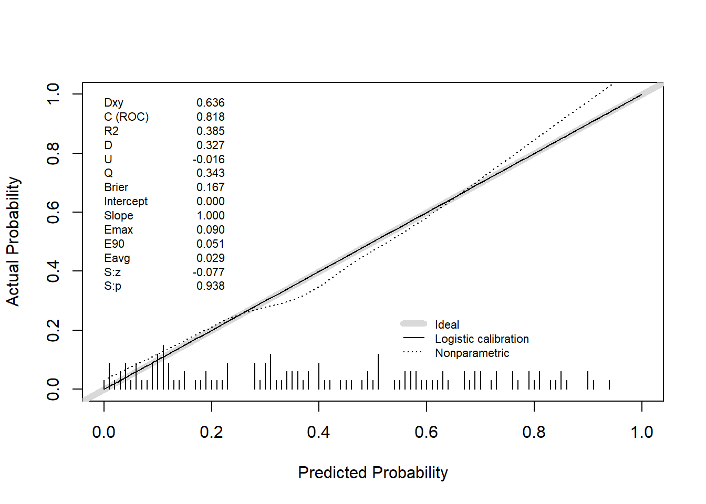
Dxy C (ROC) R2 D D:Chi-sq
6.362667e-01 8.181333e-01 3.845901e-01 3.267619e-01 4.184524e+01
D:p U U:Chi-sq U:p Q
9.879086e-11 -1.600000e-02 5.684342e-14 1.000000e+00 3.427619e-01
Brier Intercept Slope Emax E90
1.670537e-01 -9.221220e-16 1.000000e+00 8.967492e-02 5.126278e-02
Eavg S:z S:p
2.899140e-02 -7.742772e-02 9.382833e-01 # Internal validation
validation_boot <- validate(m_logistic, method = "boot", B = 1000)
print(validation_boot) index.orig training test optimism index.corrected n
Dxy 0.6363 0.6590 0.6137 0.0453 0.5910 1000
R2 0.3846 0.4196 0.3499 0.0697 0.3149 1000
Intercept 0.0000 0.0000 -0.0439 0.0439 -0.0439 1000
Slope 1.0000 1.0000 0.8507 0.1493 0.8507 1000
Emax 0.0000 0.0000 0.0434 0.0434 0.0434 1000
D 0.3268 0.3671 0.2925 0.0745 0.2522 1000
U -0.0160 -0.0160 0.0231 -0.0391 0.0231 1000
Q 0.3428 0.3831 0.2694 0.1136 0.2291 1000
B 0.1671 0.1589 0.1752 -0.0163 0.1834 1000
g 1.7761 2.0259 1.6374 0.3885 1.3876 1000
gp 0.3095 0.3188 0.2918 0.0270 0.2825 1000validation_cv <- validate(m_logistic, method = "crossvalidation", B = 10)
print(validation_cv) index.orig training test optimism index.corrected n
Dxy 0.6363 0.6353 0.6327 0.0026 0.6336 10
R2 0.3846 0.3863 0.4279 -0.0416 0.4261 10
Intercept 0.0000 0.0000 3.6218 -3.6218 3.6218 10
Slope 1.0000 1.0000 34.7253 -33.7253 34.7253 10
Emax 0.0000 0.0000 0.4834 0.4834 0.4834 10
D 0.3268 0.3278 0.3535 -0.0257 0.3525 10
U -0.0160 -0.0177 0.0612 -0.0789 0.0629 10
Q 0.3428 0.3456 0.2924 0.0532 0.2896 10
B 0.1671 0.1664 0.1795 -0.0131 0.1802 10
g 1.7761 1.7886 38.9117 -37.1230 38.8992 10
gp 0.3095 0.3095 0.3039 0.0056 0.3039 10pr_auc_bootstrap <- function(model, data, response, B = 1000, seed = 123) {
set.seed(seed)
# Internal function to compute PR-AUC
pr_auc_fun <- function(y, p) {
y <- as.integer(y)
if (length(unique(y)) < 2) return(NA_real_)
PRROC::pr.curve(
scores.class0 = p[y == 1],
scores.class1 = p[y == 0],
curve = FALSE
)$auc.integral
}
# Extract response and predicted probabilities
y_full <- data[[response]]
p_full <- predict(model, type = "fitted")
# Apparent PR-AUC
pr_apparent <- pr_auc_fun(y_full, p_full)
# Bootstrap to estimate optimism
n <- nrow(data)
opt_vec <- numeric(B)
for (b in 1:B) {
idx_boot <- sample.int(n, replace = TRUE)
dat_boot <- data[idx_boot, , drop = FALSE]
fit_b <- update(model, data = dat_boot)
y_boot <- dat_boot[[response]]
p_boot <- predict(fit_b, type = "fitted")
pr_apparent_b <- pr_auc_fun(y_boot, p_boot)
p_test_on_orig <- predict(fit_b, newdata = data, type = "fitted")
pr_test_b <- pr_auc_fun(y_full, p_test_on_orig)
opt_vec[b] <- pr_apparent_b - pr_test_b
}
opt_mean <- mean(na.omit(opt_vec))
pr_corrected <- pr_apparent - opt_mean
# Bootstrap percentile confidence interval
pr_test_vec <- numeric(B)
for (b in 1:B) {
idx_boot <- sample.int(n, replace = TRUE)
dat_boot <- data[idx_boot, , drop = FALSE]
fit_b <- update(model, data = dat_boot)
p_test_on_orig <- predict(fit_b, newdata = data, type = "fitted")
pr_test_vec[b] <- pr_auc_fun(y_full, p_test_on_orig)
}
ci <- quantile(na.omit(pr_test_vec), c(0.025, 0.975))
# Return results as a list
list(
pr_apparent = pr_apparent,
pr_corrected = pr_corrected,
optimism = opt_mean,
ci_95 = ci
)
}res_LM1 <- pr_auc_bootstrap(m_logistic, df_predictors, "epidemic")
res_LM1$pr_apparent
[1] 0.7690194
$pr_corrected
[1] 0.7418514
$optimism
[1] 0.027168
$ci_95
2.5% 97.5%
0.7087109 0.7719495 LM2
predicted_prob <- predict(m_logistic2, type = "fitted")
actual <- df_predictors$epidemic
# Calibration: bootstrap and cross-validation
cal_boot <- calibrate(m_logistic2, method = "boot", B = 1000)
plot(cal_boot, main = "Calibration Plot (Bootstrap)", col = "red")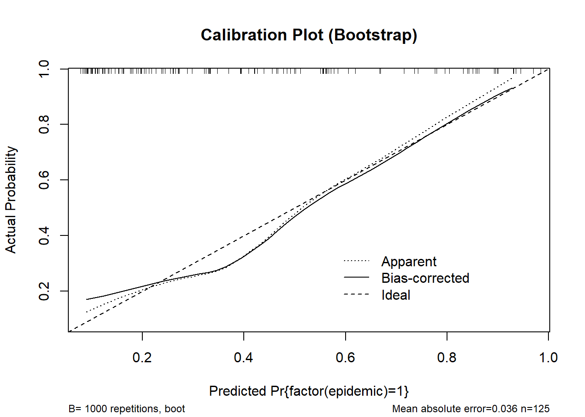
n=125 Mean absolute error=0.036 Mean squared error=0.002
0.9 Quantile of absolute error=0.074cal_cv <- calibrate(m_logistic2, method = "crossvalidation", B = 10)
plot(cal_cv, main = "Calibration Plot (Cross-validation)")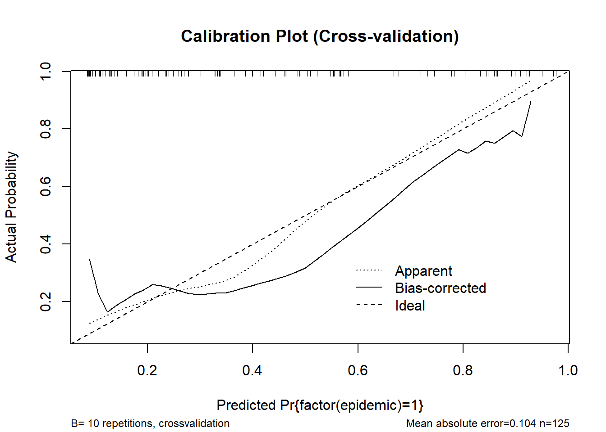
n=125 Mean absolute error=0.104 Mean squared error=0.01442
0.9 Quantile of absolute error=0.181# rms-style calibration plot
val.prob(predicted_prob, actual, pl = TRUE, smooth = TRUE)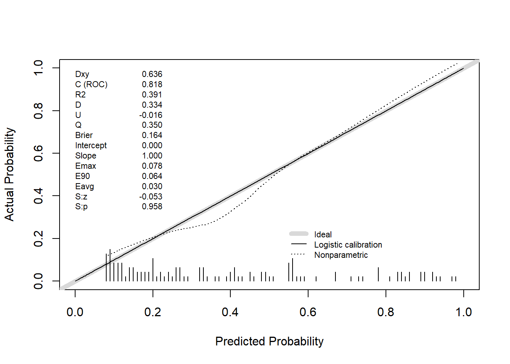
Dxy C (ROC) R2 D D:Chi-sq
6.357333e-01 8.178667e-01 3.911504e-01 3.335673e-01 4.269592e+01
D:p U U:Chi-sq U:p Q
6.394563e-11 -1.600000e-02 1.421085e-14 1.000000e+00 3.495673e-01
Brier Intercept Slope Emax E90
1.641585e-01 -4.158460e-14 1.000000e+00 7.827309e-02 6.439991e-02
Eavg S:z S:p
2.963018e-02 -5.250303e-02 9.581279e-01 # Internal validation
validation_boot <- validate(m_logistic2, method = "boot", B = 1000)
print(validation_boot) index.orig training test optimism index.corrected n
Dxy 0.6357 0.6618 0.6032 0.0586 0.5771 1000
R2 0.3912 0.4328 0.3476 0.0853 0.3059 1000
Intercept 0.0000 0.0000 -0.0627 0.0627 -0.0627 1000
Slope 1.0000 1.0000 0.8253 0.1747 0.8253 1000
Emax 0.0000 0.0000 0.0535 0.0535 0.0535 1000
D 0.3336 0.3812 0.2902 0.0910 0.2425 1000
U -0.0160 -0.0160 0.0244 -0.0404 0.0244 1000
Q 0.3496 0.3972 0.2658 0.1314 0.2182 1000
B 0.1642 0.1547 0.1735 -0.0189 0.1830 1000
g 1.6600 1.9367 1.5239 0.4128 1.2473 1000
gp 0.3083 0.3206 0.2872 0.0334 0.2749 1000validation_cv <- validate(m_logistic2, method = "crossvalidation", B = 10)
print(validation_cv) index.orig training test optimism index.corrected n
Dxy 0.6357 0.6374 0.5730 0.0644 0.5713 10
R2 0.3912 0.3961 0.3802 0.0160 0.3752 10
Intercept 0.0000 0.0000 3.3391 -3.3391 3.3391 10
Slope 1.0000 1.0000 9.2640 -8.2640 9.2640 10
Emax 0.0000 0.0000 0.4664 0.4664 0.4664 10
D 0.3336 0.3381 0.3085 0.0296 0.3039 10
U -0.0160 -0.0177 0.0845 -0.1023 0.0863 10
Q 0.3496 0.3558 0.2239 0.1319 0.2177 10
B 0.1642 0.1629 0.1873 -0.0244 0.1886 10
g 1.6600 1.6869 13.2673 -11.5804 13.2404 10
gp 0.3083 0.3099 0.2876 0.0223 0.2860 10res_LM2 <- pr_auc_bootstrap(m_logistic2, df_predictors, "epidemic")
res_LM2$pr_apparent
[1] 0.7815969
$pr_corrected
[1] 0.7537298
$optimism
[1] 0.02786702
$ci_95
2.5% 97.5%
0.7294202 0.7809791 LM3
predicted_prob <- predict(m_logistic3, type = "fitted")
actual <- df_predictors$epidemic
# Calibration: bootstrap and cross-validation
cal_boot <- calibrate(m_logistic3, method = "boot", B = 1000)
plot(cal_boot, main = "Calibration Plot (Bootstrap)", col = "red")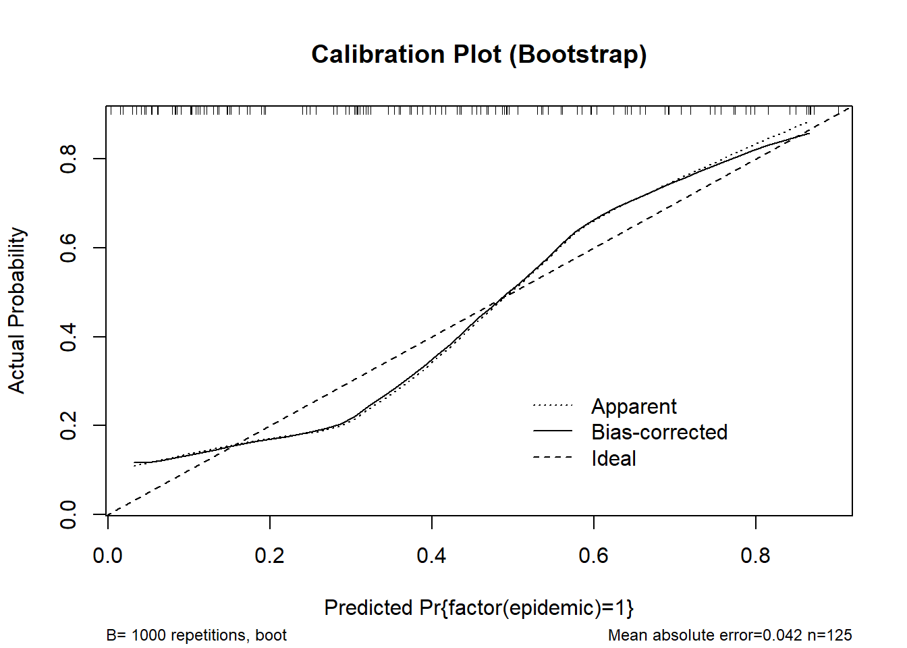
n=125 Mean absolute error=0.042 Mean squared error=0.00246
0.9 Quantile of absolute error=0.077cal_cv <- calibrate(m_logistic3, method = "crossvalidation", B = 10)
plot(cal_cv, main = "Calibration Plot (Cross-validation)")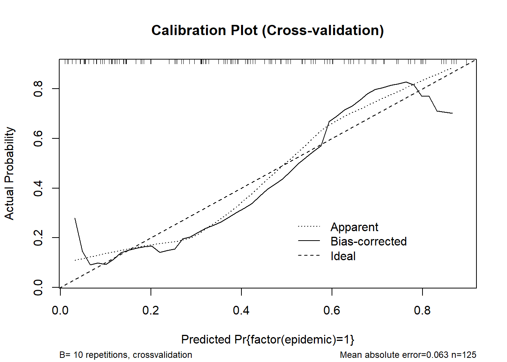
n=125 Mean absolute error=0.063 Mean squared error=0.00576
0.9 Quantile of absolute error=0.097# rms-style calibration plot
val.prob(predicted_prob, actual, pl = TRUE, smooth = TRUE)
Dxy C (ROC) R2 D D:Chi-sq
6.378667e-01 8.189333e-01 3.580264e-01 2.996694e-01 3.845868e+01
D:p U U:Chi-sq U:p Q
5.592540e-10 -1.600000e-02 2.842171e-14 1.000000e+00 3.156694e-01
Brier Intercept Slope Emax E90
1.687973e-01 -1.716688e-15 1.000000e+00 9.278250e-02 8.381359e-02
Eavg S:z S:p
4.633975e-02 -3.152830e-01 7.525468e-01 # Internal validation
validation_boot <- validate(m_logistic3, method = "boot", B = 1000)
print(validation_boot) index.orig training test optimism index.corrected n
Dxy 0.6379 0.6414 0.6271 0.0144 0.6235 1000
R2 0.3580 0.3762 0.3500 0.0262 0.3318 1000
Intercept 0.0000 0.0000 -0.0077 0.0077 -0.0077 1000
Slope 1.0000 1.0000 0.9624 0.0376 0.9624 1000
Emax 0.0000 0.0000 0.0098 0.0098 0.0098 1000
D 0.2997 0.3217 0.2917 0.0300 0.2697 1000
U -0.0160 -0.0160 0.0063 -0.0223 0.0063 1000
Q 0.3157 0.3377 0.2854 0.0523 0.2634 1000
B 0.1688 0.1636 0.1728 -0.0092 0.1780 1000
g 1.6805 1.8006 1.6475 0.1531 1.5274 1000
gp 0.2970 0.2999 0.2929 0.0070 0.2899 1000validation_cv <- validate(m_logistic3, method = "crossvalidation", B = 10)
print(validation_cv) index.orig training test optimism index.corrected n
Dxy 0.6379 0.6361 0.6250 0.0111 0.6268 10
R2 0.3580 0.3603 0.4339 -0.0735 0.4316 10
Intercept 0.0000 0.0000 0.2946 -0.2946 0.2946 10
Slope 1.0000 1.0000 1.9885 -0.9885 1.9885 10
Emax 0.0000 0.0000 0.1786 0.1786 0.1786 10
D 0.2997 0.3015 0.3482 -0.0467 0.3464 10
U -0.0160 -0.0177 0.0828 -0.1005 0.0845 10
Q 0.3157 0.3192 0.2654 0.0538 0.2619 10
B 0.1688 0.1680 0.1799 -0.0120 0.1808 10
g 1.6805 1.6938 3.2882 -1.5944 3.2749 10
gp 0.2970 0.2977 0.3130 -0.0154 0.3124 10res_LM3 <- pr_auc_bootstrap(m_logistic3, df_predictors, "epidemic")
res_LM3$pr_apparent
[1] 0.7319088
$pr_corrected
[1] 0.7198495
$optimism
[1] 0.01205921
$ci_95
2.5% 97.5%
0.7179385 0.7445676 Ensemble Models
# Fit base models and get probabilities
models <- list(
model1 = lrm(factor(epidemic) ~ tmin + rcs(rh, 4), data = df_predictors, x = TRUE, y = TRUE),
model2 = lrm(factor(epidemic) ~ rcs(rh, 4) + rcs(dew, 3), data = df_predictors, x = TRUE, y = TRUE),
model3 = lrm(factor(epidemic) ~ tmin + prec2, data = df_predictors, x = TRUE, y = TRUE)
)
# Predicted probabilities
p1 <- predict(models$model1, type = "fitted")
p2 <- predict(models$model2, type = "fitted")
p3 <- predict(models$model3, type = "fitted")Create ensemble predictions:
Unweighted
# Simple mean of predicted probabilities
ensemble_unw <- (p1 + p2 + p3) / 3Majorityard vote
# Define cutpoints for each base model
cut_p1 <- 0.530
cut_p2 <- 0.51
cut_p3 <- 0.460
# Convert predicted probabilities to binary classification
class_p1 <- ifelse(p1 >= cut_p1, 1, 0)
class_p2 <- ifelse(p2 >= cut_p2, 1, 0)
class_p3 <- ifelse(p3 >= cut_p3, 1, 0)
# Majority vote function
hard_vote <- function(...) {
votes <- c(...)
if (sum(votes) >= ceiling(length(votes)/2)) {
return(1)
} else {
return(0)
}
}
# Apply hard vote across observations
ensemble_hard <- mapply(hard_vote, class_p1, class_p2, class_p3)Stacked ensemble
# Use base model predictions as features in a meta logistic regression model
stack_data <- data.frame(p1 = p1, p2 = p2, p3 = p3, epidemic = factor(df_predictors$epidemic))
meta_model <- glm(epidemic ~ p1 + p2 + p3, data = stack_data, family = binomial)
ensemble_stack <- predict(meta_model, type = "response")
print(meta_model)
Call: glm(formula = epidemic ~ p1 + p2 + p3, family = binomial, data = stack_data)
Coefficients:
(Intercept) p1 p2 p3
-2.8931 0.8888 2.7411 2.3118
Degrees of Freedom: 124 Total (i.e. Null); 121 Residual
Null Deviance: 168.3
Residual Deviance: 121.6 AIC: 129.6Ensenble models metrics
Metrics: Brier score, optimal threshold, accuracy, confusion matrix, Youden index
evaluate_ensemble <- function(predicted_prob, actual) {
brier_score <- mean((predicted_prob - actual)^2)
# Optimal threshold
preds <- data.frame(1, actual, predicted_prob)
o <- optimal.thresholds(preds)
threshold <- o$predicted_prob[3]
# Binary classification and accuracy
predicted <- ifelse(predicted_prob > threshold, 1, 0)
accuracy <- mean(predicted == actual)
# Confusion matrix
cmax <- confusionMatrix(
data = as.factor(predicted),
reference = as.factor(actual),
mode = "everything",
positive = "1"
)
Sensitivity <- cmax$byClass["Sensitivity"]
Specificity <- cmax$byClass["Specificity"]
Youden <- Sensitivity + Specificity - 1
list(
Brier = brier_score,
Threshold = threshold,
Accuracy = accuracy,
Sensitivity = Sensitivity,
Specificity = Specificity,
Youden = Youden
)
}Unweighted
actual <- df_predictors$epidemic
res_unw <- evaluate_ensemble(ensemble_unw, actual)
res_unw$Brier
[1] 0.1605968
$Threshold
[1] 0.475
$Accuracy
[1] 0.8
$Sensitivity
Sensitivity
0.7
$Specificity
Specificity
0.8666667
$Youden
Sensitivity
0.5666667 Majority vote
res_hard <- evaluate_ensemble(ensemble_hard, actual)
res_hard$Brier
[1] 0.184
$Threshold
[1] 0.5
$Accuracy
[1] 0.816
$Sensitivity
Sensitivity
0.72
$Specificity
Specificity
0.88
$Youden
Sensitivity
0.6 Stacked
res_stack <- evaluate_ensemble(ensemble_stack, actual)
res_stack$Brier
[1] 0.1560908
$Threshold
[1] 0.47
$Accuracy
[1] 0.824
$Sensitivity
Sensitivity
0.74
$Specificity
Specificity
0.88
$Youden
Sensitivity
0.62 Ensemble models validation
Bootstrap procedure to estimate variability of AUC, Brier score, and PR-AUC.
Function adapted for ensemble bootstrap metrics (Unweighted / Hard vote)
ensemble_metrics_bootstrap <- function(data, type = c("unweighted", "hard"),
B = 1000, cutpoints = c(0.53, 0.51, 0.46), seed = 123) {
set.seed(seed)
type <- match.arg(type)
n <- nrow(data)
aucs <- numeric(B)
briers <- numeric(B)
pr_aucs <- numeric(B)
for (b in 1:B) {
# 1️⃣ Resample
idx <- sample(1:n, size = n, replace = TRUE)
boot_data <- data[idx, ]
# 2️⃣ Fit base models
m1 <- lrm(factor(epidemic) ~ tmin + rcs(rh, 4), data = boot_data, x=TRUE, y=TRUE)
m2 <- lrm(factor(epidemic) ~ rcs(rh, 4) + rcs(dew, 3), data = boot_data, x=TRUE, y=TRUE)
m3 <- lrm(factor(epidemic) ~ tmin + prec2, data = boot_data, x=TRUE, y=TRUE)
# 3️⃣ Predictions
p1b <- predict(m1, type = "fitted")
p2b <- predict(m2, type = "fitted")
p3b <- predict(m3, type = "fitted")
# 4️⃣ Ensemble
if (type == "unweighted") {
ens_b <- (p1b + p2b + p3b)/3
} else if (type == "hard") {
class_p1 <- ifelse(p1b >= cutpoints[1], 1, 0)
class_p2 <- ifelse(p2b >= cutpoints[2], 1, 0)
class_p3 <- ifelse(p3b >= cutpoints[3], 1, 0)
# Softified probability for metrics (proportion of votes)
ens_b <- (class_p1 + class_p2 + class_p3)/3
}
# 5️⃣ Metrics
aucs[b] <- as.numeric(roc(boot_data$epidemic, ens_b)$auc)
briers[b] <- mean((ens_b - as.numeric(boot_data$epidemic))^2)
pr <- pr.curve(scores.class0 = ens_b[boot_data$epidemic==1],
scores.class1 = ens_b[boot_data$epidemic==0],
curve = FALSE)
pr_aucs[b] <- pr$auc.integral
}
list(AUC = aucs, Brier = briers, PR_AUC = pr_aucs)
}Unweighted
res_unweighted <- ensemble_metrics_bootstrap(df_predictors, type = "unweighted", B = 1000)
mean(res_unweighted$AUC)[1] 0.8421867mean(res_unweighted$Brier)[1] 0.1534931mean(res_unweighted$PR_AUC)[1] 0.7956525Majority vote
res_hard <- ensemble_metrics_bootstrap(df_predictors, type = "hard", B = 1000)
mean(res_hard$AUC)[1] 0.8117832mean(res_hard$Brier)[1] 0.1735476mean(res_hard$PR_AUC)[1] 0.7582948Stacked
Stacked ensemble calibration and validation
dd <- datadist(stack_data)
options(datadist = "dd")
fit_stacked <- lrm(epidemic ~ p1 + p2 + p3, data = stack_data, x = TRUE, y = TRUE)
# Calibration: bootstrap and cross-validation
cal_boot <- calibrate(fit_stacked, method = "boot", B = 1000)
plot(cal_boot, main = "Calibration Plot (Bootstrap)", col = "red")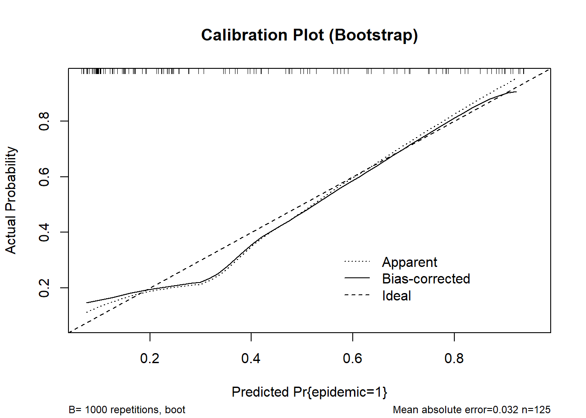
n=125 Mean absolute error=0.032 Mean squared error=0.0015
0.9 Quantile of absolute error=0.065cal_cv <- calibrate(fit_stacked, method = "crossvalidation", B = 10)
plot(cal_cv, main = "Calibration Plot (Cross-validation)")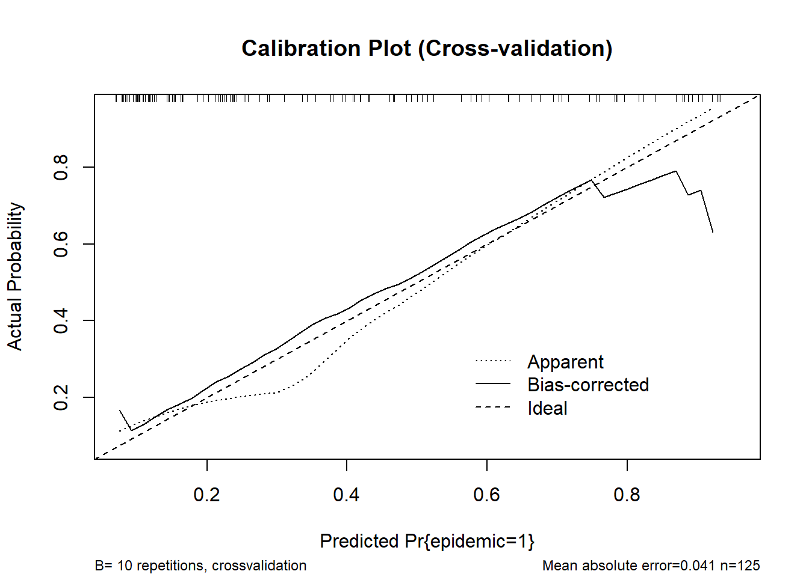
n=125 Mean absolute error=0.041 Mean squared error=0.00335
0.9 Quantile of absolute error=0.08# rms-style calibration plot
val.prob(predicted_prob, actual, pl = TRUE, smooth = TRUE)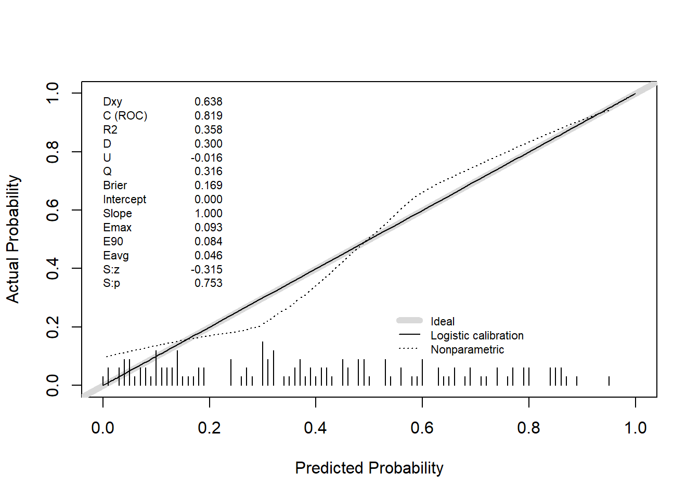
Dxy C (ROC) R2 D D:Chi-sq
6.378667e-01 8.189333e-01 3.580264e-01 2.996694e-01 3.845868e+01
D:p U U:Chi-sq U:p Q
5.592540e-10 -1.600000e-02 2.842171e-14 1.000000e+00 3.156694e-01
Brier Intercept Slope Emax E90
1.687973e-01 -1.716688e-15 1.000000e+00 9.278250e-02 8.381359e-02
Eavg S:z S:p
4.633975e-02 -3.152830e-01 7.525468e-01 # Internal validation
validation_boot <- validate(fit_stacked, method = "boot", B = 1000)
print(validation_boot) index.orig training test optimism index.corrected n
Dxy 0.6688 0.6730 0.6505 0.0225 0.6463 1000
R2 0.4212 0.4393 0.4060 0.0332 0.3880 1000
Intercept 0.0000 0.0000 -0.0126 0.0126 -0.0126 1000
Slope 1.0000 1.0000 0.9422 0.0578 0.9422 1000
Emax 0.0000 0.0000 0.0153 0.0153 0.0153 1000
D 0.3654 0.3880 0.3493 0.0387 0.3267 1000
U -0.0160 -0.0160 0.0047 -0.0207 0.0047 1000
Q 0.3814 0.4040 0.3447 0.0593 0.3220 1000
B 0.1561 0.1509 0.1621 -0.0112 0.1673 1000
g 1.7290 1.8189 1.6663 0.1526 1.5764 1000
gp 0.3236 0.3259 0.3167 0.0092 0.3144 1000validation_cv <- validate(fit_stacked, method = "crossvalidation", B = 10)
print(validation_cv) index.orig training test optimism index.corrected n
Dxy 0.6688 0.6712 0.6119 0.0593 0.6095 10
R2 0.4212 0.4246 0.4497 -0.0252 0.4464 10
Intercept 0.0000 0.0000 4.9438 -4.9438 4.9438 10
Slope 1.0000 1.0000 6.7315 -5.7315 6.7315 10
Emax 0.0000 0.0000 0.5253 0.5253 0.5253 10
D 0.3654 0.3686 0.3884 -0.0197 0.3851 10
U -0.0160 -0.0177 0.1104 -0.1281 0.1121 10
Q 0.3814 0.3864 0.2780 0.1084 0.2730 10
B 0.1561 0.1552 0.1720 -0.0168 0.1729 10
g 1.7290 1.7457 13.4171 -11.6714 13.4004 10
gp 0.3236 0.3247 0.3145 0.0102 0.3134 10# Extract corrected AUC from Dxy
Dxy <- validation_boot["Dxy", "index.corrected"]
B <- validation_boot["B", "index.corrected"]
auc <- (Dxy + 1) / 2
B[1] 0.1673119